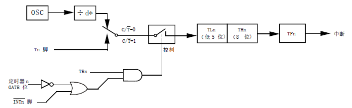
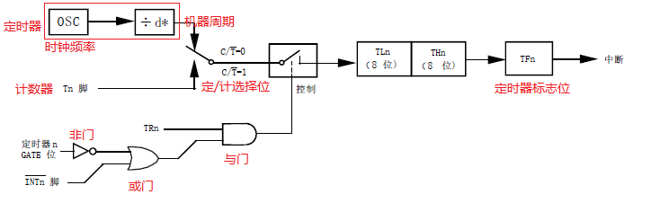
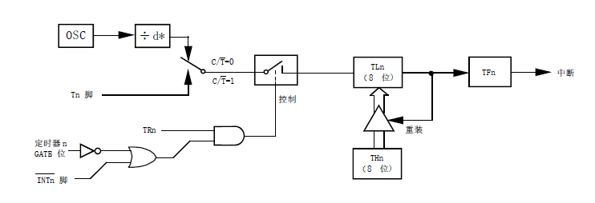
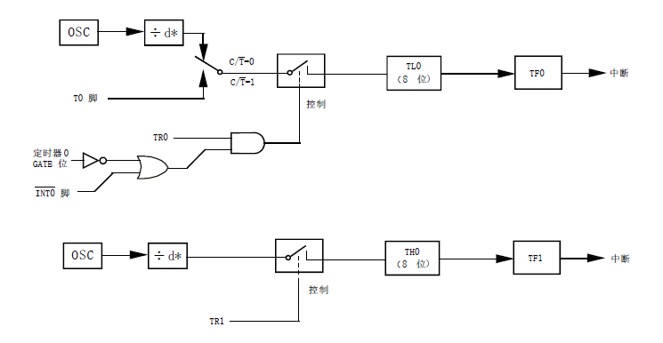
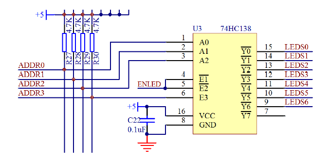

本篇为KingST的C51单片机的学习笔记，Cheaper 5为讲解基础的逻辑电路，定时器与数码管。
Chapter 5 定时器与数码管
逻辑电路和逻辑运算

逻辑与 &&
F=A&&B，当A、B的值都为真，其运算结果F为真，当A、B的值任意一个为假，其运算结果F为假。
逻辑或 ||
F=A||B，当A、B的值任意一个为真，其运算结果F为真，当A、B的值都为假，其运算结果F为假。
逻辑非 !
F=!A，当A的值为真，其运算结果F为假，当A的值都为假，其运算结果F为真。
按位与 &
F=A&B，将A、B两个字节的每一位都进行与运算，其运算结果为F。例如A=1100 1100、B=1111 0000，则F=1100 0000。
按位或 |
F=A|B，将A、B两个字节的每一位都进行或运算，其运算结果为F。例如A=1100 1100、B=1111 0000，则F=1111 1100。
按位取反 ~
F=~A，将A的每一位都进行取反运算，其运算结果为F。例如A=1100 1100，F=0011 0011。
按位异或 ^
F=A^B，异或的意思是，如果运算双方的值不同则为真，如果运算双方的值相同则为假。例如A=1100 1100、B=1111 0000，则F=0011 1100。
定时器
时钟周期：时钟周期T是时序中最小的时间单位。具体算法就是时钟周期=1/时钟源频率，KST-51开发板上用的晶振是11.0592MHz，所以时钟周期为1/11059200秒。
机器周期：单片机完成一个操作的最短时间（主要针对与汇编语言，汇编语言程序每一条语句的执行所用的时间都是机器周期的整数倍）。标准51单片机（C51）的一个机器周期是12个时钟周期，也就是12/11059200秒。
标准51单片机（C51）有两个定时器/计数器，为T0，T1。而STC89C52的资源多个定时器/计数器T2。目前先不看T2，只看T0和T1。T0和T1共3种6个寄存器，分别为定时值存储寄存器：T0高八位TH0，T0低八位TL0，T1高八位TH1，T1低八位TL1；定时器控制寄存器：TCON；定时器模式寄存器：TMOD。
定时存储寄存器
定时存储寄存器有4个，TH0，TL0，TH1，TL1。
TH0寄存器：SFR地址为0x8C，复位值为0x00，不可位寻址
TL0寄存器：SFR地址为0x8A，复位值为0x00，不可位寻址
TH1寄存器：SFR地址为0x8D，复位值为0x00，不可位寻址
TL1寄存器：SFR地址为0x8B，复位值为0x00，不可位寻址
定时存储器的作用为当低八位计满时，高八位计1，直至高八位低八位全部被计满就重新开始计。
定时控制寄存器
定时器控制寄存器有1个，为TCON，SFR地址位0x88，可位寻址，各个位的复位值均为0。
TCON的各个位的作用：
TF1（位7）：定时器1溢出标志位。一旦定时器1发生溢出（高八位和低八位都计满）时硬件置1.清零方式有两种，分别位软件清零（通过程序清零）和硬件清零（通过看门狗之类的单片机自动清零）。
TR1（位6）：定时器1运行控制位。软件置位/清零来进行启动/停止定时器。
TF0（位5）：定时器0溢出标志位。作用和TF1一样。
TR0（位4）：定时器1运行控制位。作用和TR1一样。
IE1（位3）：中断相关先不管。
IT1（位2）：中断相关先不管。
IE0（位1）：中断相关先不管。
IT0（位0）：中断相关先不管。

TR1（位6）/TR0（位4）：定时器运行位当程序中写TR = 1以后，定时器就会每经过一个机器周期自动加1。当程序中写TR = 0以后，定时器就停止加1，其值（TH1/0和TL1/0）保持不变。
TF1（位7）/TF0（位5）：定时器标志位它的作用是告诉我们定时器溢出了。当TH1/0和TL1/0同时计满时，TF1/0会自动变成1，但不影响定时器继续工作。
定时模式寄存器
定时器模式寄存器有1个，为TMOD，SFR地址位0x89，不可位寻址，复位值位0x00。
TMOD的各个位的作用：
GATE（位7）：定时器1门控位。置1时只有在INT1脚为高及TR1控制位置1才可以打开定时器。
C/T（位6）：T1的定时器计数器选择位。清零时为选择定时器，置1时为选择计数器。
M1（位5）：M1和M0共同组成T1的4种工作模式的选择。
M0（位4）：M1和M0共同组成T1的4种工作模式的选择。
GATE（位3）：定时器0门控位。作用和GATE（位7）也就是T1的相同
C/T（位2）：T0的定时器计数器选择位。作用和C/T（位6）也就是T1的选择位相同
M1（位1）：M1和M0共同组成T0的4种工作模式的选择。
M0（位0）：M1和M0共同组成T0的4种工作模式的选择。

定时器的4种工作模式：
M1=0，M0=0的模式0：兼容8048单片机的13位定时器，THn的8位和TLn的5位组成13位定时器。（不常用）

M1=0，M0=1的模式1：THn和TLn组成一个16位的定时器。（最常用）

M1=1，M0=0的模式2：8位自动重装模式，定时器溢出后将THn重装到TLn。（溢出后将THn的值赋值给TLn）

M1=1，M0=1的模式3：禁用定时器1，定时器0变成2个8位定时器。（不常用）

根据模式示意图，定时器部分OSC为时钟频率，d为12，出来的就是机器周期。要启动定时器，C/T要清零，为选择定时器，控制那里要置1，那么与门两边都要为1，那么TRn就要为1，下路的或门的输出也要为1，或门输出为1，那么INTn和非门输出至少有一个为1，非门为GATE位的取反。所以，得出：
1.TRn一定要置1。
2.当INTn（P3.2引脚）为1时，GATE清零置1都可以。当INTn为0时，GATE一定要清零，定时器才会工作。
3.C/T=0时，为定时器，定时器本质就是计数器，只是它计数的是晶振的数计数经过了几个机器周期。C/T=1时，为计数器，就是计数外部脉冲的个数。
定时器的使用的一般流程
使用定时器一般需要以下步骤：
第一步：设置定时器模式寄存器TMOD，配置好工作模式（不可位寻址，按字节赋值）。
第二步：设置定时器存储寄存器THn和TLn的初始值（不可位寻址，按字节赋值，通常位TH0=0xB8，TL0=0x00即位0。02s）。
第三步：设置定时器控制寄存器TCON，可位寻址，所以通过TRn置1来让定时器开始计数。
第四步：判断定时器控制寄存器TCON中的TFn位来监测定时器溢出情况。
关于THn=0xB8，TLn=0x00的计算。一个机器周期位12/11059200秒，当计到第18432个机器周期即位经过了0.02s。而溢出值是65536，那么从65536-18432=47104开始计，经过18432个机器周期（0.02s），定时器就溢出了，同时TFn被置1.而47104的16进制就是0xB800，即高八位位0xB8，低八位位0x00。利用定时0.02s可以使用50倍变成1s。
1 |
|
数码管基础
点亮数码管
数码管也是一种LED，常见的数码管分为共阴和共阳。共阴就是所有LED的阴极连接在一起，由阳极控制小灯的亮灭。共阳就是所有LED的阳极连接在一起，由阴极控制小灯的亮灭。


由数码管原理图可以看出通过控制abcdefg和dp来控制数码管的显示。关于公共端由两个，公共端通过的电流较大，所以用两个公共端并联来进行分流。
由开发板原理图可知，控制最右边的数码管是通过74HC138输出LEDS0为低电平来控制的，所以U3的75HC138为ADDR2，ADDR1和ADDR0都置0，LEDS0输出0。要让数码管显示数字1，那么就点亮b段和c段，对应就是DB1和DB2都置0。对应的P0就是0b1111 1001，十六进制就是0xF9。


数码管显示1的程序。
1 |
|
数码管和定时器结合的计时器
数码管每一秒进行加1就为数码管的计时器。数码管0-F的真值表如下。利用数组将真值表的数值填入，利用数组的角标来控制P0的值。可以利用code关键词来将真值表进行修饰，这样真值表就会被写入Flash。从而节约RAM空间。

1 |
|